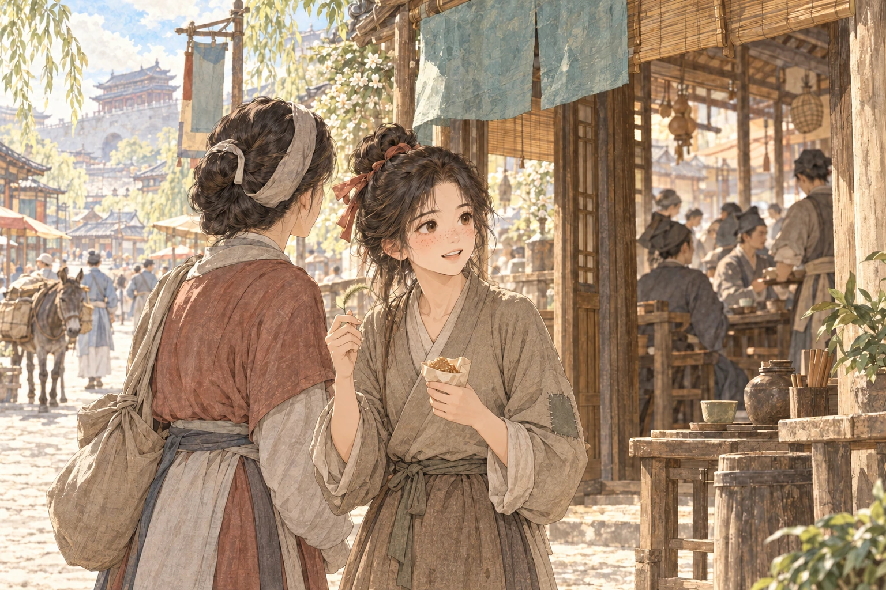
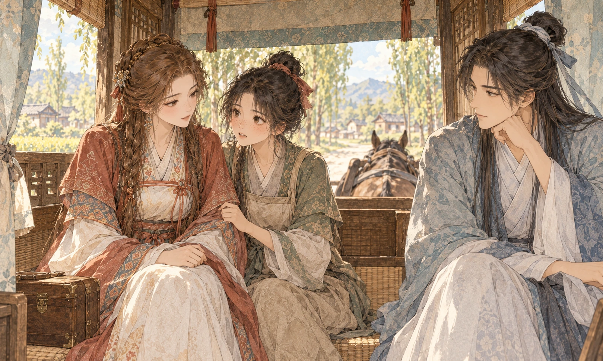
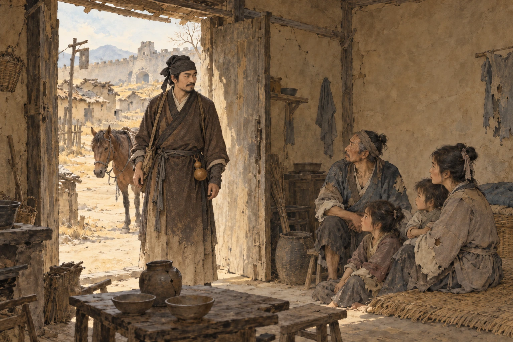
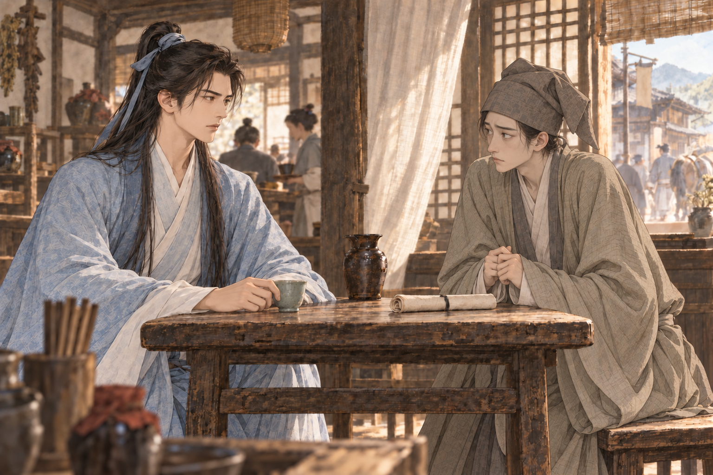
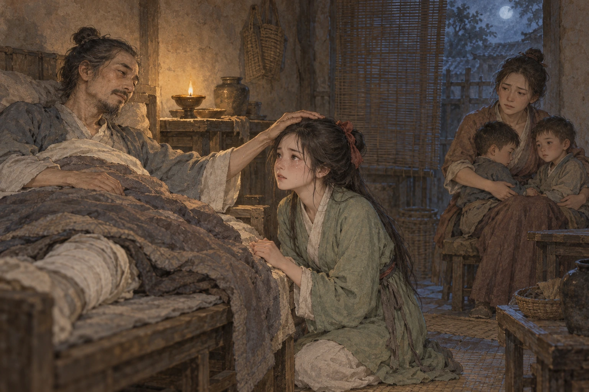
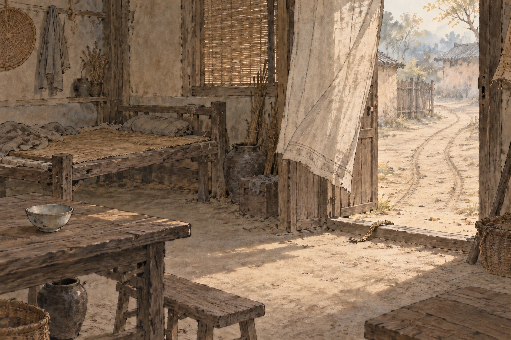

01 · 19岁茶馆主人
周正钦
汴京出身的年轻公子，遇事爱较真，也爱先把话说得很满。
旧稿与新章排进同一本书，人物、插图和每章的点赞留言也有了位置。
隔了许久，故事从旧稿停下的地方接出新的一段。
三位作者轮流写下半日闲与来客的故事。
你将在茶馆与路途中遇到这些人。更多的事，留给正文慢慢说。
汴京出身的年轻公子，遇事爱较真，也爱先把话说得很满。
栗色头发，眉眼带着几分异域风韵。随身带着药箱，过去似乎不大愿提。
脸上有雀斑，记挂着失散的五妹。
有道士模样，一张嘴比算盘还快；消息也一样灵通。
管账、端茶，做事谨慎，平时不大爱解释。
第二次进汴京城，没有第一次的惊奇，也没有五妹了。
“娘，买我的，是什么人家？”我把手里的狗尾草、车前揉作一团，手被草汁染绿，散发出新鲜的草味。
娘忙着赶路，头也没回：“好人家，好人家，过去不会挨饿！”
“和——五妹比，差多少？”五妹长得美，上次来就被掮客要走了，至于我，他只嘟囔着，在找着呢，会有的，会有的。本来以为能待在家里照顾爹了，可是我就长这样，怎么也有人要？
“三妹！怎么偏偏今天你这么多话！”娘回头狠狠瞪了我一眼。我不再敢说话。
可是不一会她又停下，回头，讨好似的，递给我两个糖饼。
糖饼啊，可遇不可求。至于娘给我安排好了的事，我还能有什么不满呢？
汴京城驴子也很多，中间掺杂着一些马匹。食店酒肆绵延不绝，天气不同，小吃又增了许多花样。
我们到了一座不大不小的茶馆，就是改变了我命运的那座。

里面生意不温不火，在汴京一抓一大把的样子，看不出有什么异样。
掮客坐在茶馆一楼，进门就能看到他。他精瘦身材，微微驼背。
他对他周围的人一笑：“瞧，这就来了一个！”
“大娘，八十文！”他眯缝着眼睛。
“大人，说好，一百文哪！”娘尖声。
“老婆子，这么大声干嘛？我都在你这买了一个了，这二十文算是个认识了行吧。我这人心好，可怜你，才在你这儿买，你看这姑娘脸上的雀斑，大人们都不爱哪！”他的扇子一扇一扇。
娘还想说点什么，又被他抢占先机：“你别以为我不知道，乡下两升米就能牵走一个小孩，你卖给我还不是捡了大便宜！”
娘恨恨地看了他一眼，边把手从我的臂弯里抽出来，把我往他身边送。
我低着头，吃着手中的糖饼，任由掮客把我拉走。最后我还是没忍住回头看了一眼娘，她头也不回，只是口中嘟囔着，嫌那八十文少了，一副很不满意的样子。
“来小丫头，拜拜买你的老板。”那掮客的笑在我看来十分恶心，再加上他是斗鸡眼，我便更不敢直视那笑了。他狠狠地按住我的肩膀，强迫我跪在地上。我抬头看了看我未来要服侍的人:他衣着并不怎么整齐，甚至不干净;脸上贴着狗皮膏药，一副尖嘴猴腮的样子见了我像是第一次见女人似的，发出令人难受的猪哼声，还直勾勾盯着我看。
“这便是买你的李公公，以后可就是你夫君了。”那掮客说着，还让我给他磕个头。我只感觉心拔凉拔凉的，娘骗了我，嫁给这个太监我一辈子都会生不如死的。听着他们在不停地讲价，我几乎要哭出来。
“那就说好一百文钱了，这姑娘是你的了，十五岁正是含苞待放的年龄哪!”他两一边说着一边大笑起来。
“一百二十文，把她卖给我。”
突然，楼上传来了清脆的男声，宛如天籁一般让我看到一线生机。那太监立马脸就黑了，鼻子里不停出着气，却也没说什么话。
“哎哟，李公公，不好意思了，我这儿都是价高者得，那我就把这丫头卖给上面那位了。”掮客笑得更开心了，一副获胜者的姿态看着那太监。那太监则一副敢怒不敢言的样子，狠狠地剁了几脚地面，口中念念有词:“这下又得等有什么卖剩下的烂货了，好不容易才攒到一百万……”
那掮客把我带到二楼的一个房间门前，敲开了房门。开门的是一个约莫20岁上下的男子，我读书少不知道怎么形容，总之就是长得比我们全村的男娃子都好看;他身上有一种气势，让我不敢吃糖饼的那种气势。想着我悄悄把糖饼收在我的衣袖里，抬头悄悄偷看这男子。他穿着不凡，腰系香囊，一看就是大户人家的公子。
“老板，这丫头我给您送来了啊，一百二十文，您可别反悔。”我有些紧张，不由得站的笔直。生怕这位大人一个反悔，我就给得太监做媳妇了。
“买她的不是我，你去东头第一间找我……我娘子吧。”男子说到他娘子的时候，好像有点支支吾吾。夫妻两人竟不同住一室，莫非是吵架了?
掮客殷勤地对男人点点头，哈哈腰，便又把我带走了。东头第一间房出来了一个二十岁上下的女人，她的头发是罕见的栗色，长得十分好看——一种别样的好看，让我想起五妹。连那识人众多的掮客都愣了一下神，才说卖我的事。
女人以一百二十文的价格买下了我，掮客开心地摸着钱下楼和那群狐朋狗友夸耀去了。我看着老板娘，一时说不出话来。
“有名字吗?”她问我。
“没有，他们叫我尤三妹。”
“也是没有名字的孩子吗……你以后就在这茶馆待着，打打下手吧。”她冷漠脸上竟显出几分同情。我的心揪了一下，又觉得有些开心。接着她带我去把我那身脏兮兮的衣服换了，脸也洗干净，头发也打理妥当，就带我下一楼说是要“熟悉熟悉茶馆环境”。
“桃花酒酿空留醉，云雨巫山枉断肠。今天咱就来讲讲汴京大才子黄某人隔壁邻居的叔父的大侄子和窃钰楼头牌的妹妹的姑姑的大表妹的那点事……话说那是一个夜黑风高的夜晚……诶，客官莫走啊，再添一壶茶呗，若是不爱听这样的故事，那换一个，小王飞刀王簪花半夜离奇失踪，隔壁妻儿为何半夜惨叫……”茶馆的一头，用好几个椅子累着，高高坐着一个中年男人，穿着颇像画本里的道士，口若悬河，舌灿莲花，坐在桌子上讲着奇奇怪怪的故事，周围还围了不少边喝茶边听故事的人。
“那个是茶馆的说书人陈妄才，这人是个江湖骗子，三妹你可提防着他点儿。”老板娘见我听得出神说道。旺财?不错的名字，和我邻居张哥家养的大黄狗一个名儿。
她领着我到了茶馆柜台的地方，那儿正坐着一个衣着朴素的青年男子。“一共十四文钱，现在给还是打欠条?”他一边打着算盘一边微笑着说，一双乌黑的眼睛很是有神。看到老板娘和我，他拜了拜说：“夫人。”又看向我，眼里夹了几分疑惑:“这位姑娘是?”
“尤三妹，找来帮你忙打打下手的。这是店里的店小二，佟鼒，你明天干活找他便可。”
我们互相打过招呼后，老板娘又带我介绍了一番二楼的情况。东厢一号房住的是老板娘我已经了解，东厢三号房住着老板，西厢一号是佟小二的地方，西厢二号则是我以后的住处。老板娘还说东厢二号暂时是空着的，但不予外人居住，并说那是一位尊贵的客人常住的地方。我虽不懂，但也不敢问什么。
等老板娘说完这全部的东西后，我向她提出了一直憋在心里的请求，跟我五妹有关的请求。
“今天时候不早了，你洗洗早点睡。明天很早就开张。”她一改之前的热心样子，岔开话题走了。
看来是我越界了。
喜欢会先记在当前浏览器。
“半卷红旗临易水。”我刚从房里出来，那个店小二似乎在等着我似的，只是神态与昨天刚见面时迥然不同，仿佛做出轻描淡写的样子但是却在仔细关注些什么。
这大清早地吟诗吗？我又不识字，更别说背诗了。不对，这句诗好像有点熟悉，听过隔壁书生吟过——“塞上燕脂凝夜紫！”
他的眼神游离了会，转瞬代替的是戒备。
“喂。端一下这套茶具到楼下，我有柴要砍。”他把木质托盘强行推到了我面前，我连忙用手接住，却因低估了它的重量而打了个趔趄。
“小心点，这套茶具不便宜！”他双手抱在胸前，把我从头到脚看了个遍，弄得我很不自在。
托盘很宽，导致脚下的路难以看见。我当时只想快点离开他身边，然后，不出意料地，我的脚下被障碍物一挡。
在那短暂的倾斜中，脑子里的想法就如洪流倾泄而下：我这是踢到什么了？感觉不是硬物啊？这茶馆没看到有养猫猫狗狗啊？话说，那店小二有点不对劲，他的眼神好像要把人看穿，他故意的？完了，我这才上工第一天，就要打碎宝贝茶具了？受到同事的排挤？我为什么会不招他待见呢？难道是昨天我和他打招呼的礼数还不够到位？还是说我昨晚睡觉打呼吵到他了？这我倒是没底气否定。还是说他是那种极度没有安全感的人，排斥新事物呢？
“啊呀！”茶具丁丁当当碎了一地。完了，这还不得被打？
我赶紧爬起来，开始收拾地上的残局。他居然还没走。我抬头看了看他，他的眼睛里闪过一丝不解。他应该是觉得我不知道是他干的很傻吧，或者是没有对他的行为做出反击，诶，这个时候就该忍让吧，应该沟通找出问题，让他明白咱们是一伙的不该起内讧，毕竟以后都要一起共事。
“佟大哥。”我尝试着叫他。
他面无表情。
“佟叔？”也许是辈分问题。
他居然开口了：“你是哪里人？”
果然是辈分问题嘛。我如实告诉了他。
“您呢？”我不放过一点加进沟通的机会。
他却头也不回地走了。
“三妹！”
是老板娘。
“老板娘，对不起，我打碎了这个……”我跪在地上，已经准备好接下来的惩罚了。
可是，老板娘却蹲了下来，帮我收拾茶具的碎片。我羞愧难当，加快了收拾的手脚：“夫人，使不得啊。”
老板娘没有继续我的话题，轻声：“你五妹的事，恐怕，我们无能为力。”
这时碎片也差不多收拾好了。
我们一同站起来，我声音也小小的：“夫人，多谢。”
我怎么能向他们要求这么多呢。没事，大不了，我以后自己去找她。
喜欢会先记在当前浏览器。
来半日闲茶馆已逾一月，佟小……诶，佟叔，对我已经没有一开始的剑拔弩张了，可能还是安全感的问题，越是这样的人越需要受到关爱。
我在他砍柴的时候送绿豆粥，浆洗衣服时顺带他的一起，见他睡眠状况不好给他从夫人那里讨来的安神香，虽然他一开始都用眼神拒绝我，但是最后他还是一副很受用的样子嘛。
睡眠不好是大事，可是我留心听了听，他晚上大半夜的总是弄出声响，指不定是梦游什么的，可是照他的话讲：“不要多管闲事！”他的神色我都能拟出来，可惜他的眼神已经杀不死我了，哈哈。
哎呀，一不留神我怎么全都在说佟叔了。
这半日闲表面上扔进茶馆堆里就再也找不见，但是，在这段时间里，我却发现了一些不太寻常的事情。
喜欢会先记在当前浏览器。
早上醒来，梳洗罢，我靠着木窗子发呆。汴梁是我的故乡，我也从未离开过这地方，所以它对我来说在熟悉不过了。
茶馆门前的街道上，夹杂着来来往往过路的商贩与游客马蹄驴蹄踩踏之声，卖水果的小哥与卖首饰的大娘争相吆喝之声，独占一方的纨绔与仗义执言的小姑娘的争吵之声……繁华如织的街道上遍布着各色各样的人，他们的生活肆意彰显着这个朝代的绚丽多姿。而我知道，金玉其外下，暗处涌动着的暗流滋长着罪恶，企图使朝廷动荡、民不聊生，不想让这片土地安生。
而我，作为曾经的禁军头领，而今的倚淮茶馆主人，我的任务便是处理掉这些暗处蠢蠢欲动的心思，全力维护皇上的权威。当然，这座茶馆也并不像它表面上看起来那么普通。
正当我胡思乱想之时，窗外飞来一只鸽子，我知道，又有任务需要我完成了。
“七天之内，调查出清晏县县长贪污证据”，这便是鸽子带来信息。思索片刻，我脑海中却没有任何关于这个县的信息，于是我决定下楼找妄才，这个号称“闯荡江湖数十载，独领风骚再百年”的江湖骗子。
“妄才，你可知道清晏县?”果不其然，一下楼便看见这家伙正吹嘘着自己行走江湖的大事呢，于是我支开他人，问他我想知道的信息。
“就是那个县长被处贪污死罪，县民们纷纷起义的那个吧……”他扣着手指甲漫不经心地说到。
“什么?能否说得再具体一点。”我急切地想知道更多信息，只见他两手一撮眉毛一抬，一副“你懂得”的表情。我立马从口袋里掏出一串铜板来，欲知后文。
“清晏县，原名青盐县，是汴梁周边一个产盐的微不足道的小县。而自去年换了个新县长，青盐县摇身一变成了富饶的大县，名儿也改了。听说信任县长是个两袖清风治理有方的清官儿，如今突然被查出贪污来了……”
“政府却拿不出有力的证据来，导致民情激愤?”
“就是这么个情况。”妄才数着手中的铜板儿，“老板，您这也给太少了吧?最近我都没钱吃饭……”
我忍住对他翻白眼的心，“上头每月发的月饷还不够你花的?”
“你也知道我这种闯荡江湖的英雄豪杰，乐善好施的时候多了去了，上月我……”只见妄才有越说越长的劲头，我赶紧拿出几串铜钱堵住他的嘴。“这次我们恐怕要去清晏县一趟了，上头的人要我们找出有力的证据来。”
“何日出发?”
“今天下午就得出发。”
“去……去几天?”
“不知道，最多七天。”接着，他便开始用他“祖传的咒语”开始诅咒我了。我目送完他含怨离开的身影，转头上楼打算跟缙云说明情况。
我敲开东厢一号的门，尤三妹也在屋里。见我来了，她眼中闪过一丝防备，接着反应过来说:“有任务?”
没任务就不能找你了吗，“嗯。”我又示意尤三妹说:“你出去一下。”
然后我把妄才告诉我的也向缙云复述了一遍，并告诉她时间紧迫，今天下午就得出发。
“带上三妹。”也许是她的话让我有些疑惑，又或许是她冷漠的语气让我有点儿不开心，我不禁反驳她的主张:“带上一个奴婢有什么用?”
缙云听了这话好像不太高兴，她的语气更冷漠了，“权贵人家的公子想必不知道也不需要这些低贱之人的用处。”我愣了愣，还没等我想清楚个中缘由，她便以整理行装为由下了逐客令。
喜欢会先记在当前浏览器。
漆黑的房间里，我的眼睛突然感到一阵酸痛，才意识到，我的眼睛一直睁着。
面前的黑色浓淡不均，好像多掺了水的墨水，又有人怕被发现，张着手来搅混。不多时，那片黑色竟被搅混成一个街角。
“囡囡……”
我捂住耳朵，尽管我知道是幻听。
“囡囡，你看！”一个老人半蹲着，笑得胡须一动一动，手里拿着半个吃剩的鸡腿。“我看着一个小孩刚丢下的。就在周府旁边。”
我闭上眼睛，却看得更加真切。
“天下污墨藏不住，缙云一泻到汴梁。”
黑色的老人像个簸箕一样坐在黑色的街角，头发胡须散乱，遮盖了脸颊。
我喃喃：“我知道，我知道……”耳朵感到一点痒和一点凉，一摸，果然又落泪了吗。
我起身，捻亮了一盏小灯，加重了焚的安神香的剂量，又从箱子里摸出一把药草，凑着灯辨认了一下，干嚼了几下，咽了下去。
再熄灯，也许我能睡着。
喜欢会先记在当前浏览器。
我们匆忙收拾了一下，就踏上了去前往清晏州的路，留了佟鼒看守茶馆。
尽管说“人间四月芳菲尽”，但是谁说只有芳菲才是美的呢？大家都配了花戴在鬓间，以为美；可是抓一把芫荽别在草帽上不也别有一番风味吗？
道路旁的杨树蓊蓊郁郁，叶子像刚打了蜡的地板，反射着略微刺眼的阳光，风不时吹来，杨树叶摇而枝不曳，像波斯舞女舞动时身上佩戴的宝石流苏。
我用手支着下巴，出神地望着马车之外。
三妹压低了声音，轻轻摇了摇我的手臂：“夫人，快听旺财讲新拜副宰相王荆公家里的趣事。哈哈……”这姑娘倒是好得真快，刚来那怯生生的样子，现在已经荡然无存了。这样也好，和她说任务的事也不会被吓跑了。
我把头转向谈话的焦点，却发现周正钦正直勾勾望着我。他坐在对面，马车另一边开帘子的地方，在外面还明媚的阳光，从他脑后掀起的帘子里挤进马车里，就成了微弱的光晕，这在他周身形成了一圈荧荧的晕。午后人慵懒，他看起来就像一个瓷娃娃。可是此时，“瓷娃娃”的一双标准杏眼，正透过层层光晕，眼光直直看了过来，好像日暮时分香炉对面的夜明珠。
他这样看我，作甚？
我假装不经意地抹了抹脸，吃力地将眼神转回到妄才身上。
妄才说了什么，我怎么什么都听不明白，只见他嘴巴一张一合，眉飞色舞，唾沫星子不时溅出，发出一些单个听来熟悉的音节。
“缙云，醒醒，说正事啦。”正事要紧，正事要紧。周正钦歪着头，一副看我笑话的样子。我耸了耸肩，撇撇嘴，眼神滑过他。
妄才压低了声音:“新情报。清晏知州，刘罗果——清晏本地人，嘉祐六年清晏解元，寒门出身，少年失怙，才华与品行——俱佳。清晏的通判，徐长卿，是熙宁元年，清晏的举人第七名。而刘罗果，据说当年还担任了当年乡试的主考官，这样一来，就洗不清了……有个叫钱昆的杭州人啊，平生最爱吃螃蟹，在朝任职时，要求到地方任知州，别人问他愿意去哪里，他回答道：只要是有螃蟹无通判的地方就行。其实要说螃蟹哪里的最好吃，什么吃法最为上策，我还是有点研究——哎不好意思扯远了，职业病职业病……这这这，知州和通判本是形同冰炭，两不相容。现在，他们关系一不同寻常，总有流言四起……只是流言总有几分源头，也不可全抛掷脑后……”
“看来要找刘罗果贪污的证据也得从徐长卿身上下手。”周正钦微偏着头，若有所思地说，“马上就要到清晏州了，大家再在车上歇息一会罢。这些事儿到了地方我们再好好探探。”说完，他便双手交叉，两眼一闭，倚着墙开始小憩了。
正当我打算也休息休息的时候，三妹神色有些慌张地扯了扯我的衣角，说:“这地方离我家里好近啊……”

我愣了一下，随即心下领会。小姑娘一直以为我带她出来是外出游玩的，却不曾想目的地越来越靠近她的家乡，想必是失了点安全感，以为我们要弃了她。长时间的安逸让她差点忘了自己之前的遭遇，这次却又让她想起来。“近乡情更怯”，我不禁想，但三妹的“怯”恐怕是真的害怕了。我好言安慰了几句，告诉她这次我们的目的地并不是她家乡，她才将将安定下来。
……
“缙云，醒醒。”我迷迷糊糊睁开眼，便看见周正钦的脸，他的眼正直直地看着我。看得我脸颊微微发烫，“到清晏州了。”他转过身跳下车，手一伸，示意我下来。
我叫醒了在一旁睡过去的三妹，扶着周正钦的手也跳下了车。此时已是傍晚，树上的蝉拖长了声音疲惫地叫着，路上的人们也都收拾东西回家去了。
我跟着周正钦进了眼前的客栈，发现妄才已经不见了踪影，想必又是出去闹腾去了。
喜欢会先记在当前浏览器。
东风夜放花千树。更吹落、星如雨。宝马雕车香满路。凤箫声动，玉壶光转，一夜鱼龙舞。
蛾儿雪柳黄金缕。笑语盈盈暗香去。众里寻他千百度。蓦然回首，那人却在，灯火阑珊处。
——辛弃疾《青玉案·元夕》
安顿好了住处，已是入夜。妄才刚到客栈落脚，连凳子上的灰尘都没坐干净，就一阵风似的出去了。缙云……今天不知道为什么总和她的视线对上，她用那样一双无波无澜又隐忍着什么的眼睛看着我，让我越来越好奇她到底经历过什么。上面派下来的时候我只知她是“江南第一散医”的徒弟，一副生人勿近的样子——这里的生人是指活着的人——让人不敢靠近却又心疼。似乎跑偏了，缙云今晚带着三妹一起逛夜市去了，我怎么放心让两个女眷出门，本想跟着去，却被缙云的眼神阻止了。我只好叫了几个功夫好的手下，暗中保护她们俩。
至于我今晚要做什么，也出去跟他们一起闹腾?我还记得我的任务，夜已深，我想以我个人的名义去拜访知州府，却又怕打草惊蛇。于是我打算先暗访刘罗果、徐长卿这两位关键人物的私人宅邸再另做打算。
今天没有什么节日，街市却很是热闹，华灯如昼。女眷们打着精致的妆成群结队地在街上调笑着，耳畔还传来幽幽玉笛声。我知道，明明有小路可以抄，却明明要走这条人多的大路，是因为我想看看缙云现在还安然否。可我伸长了脖子左探右探，却也没看到她俩的踪影。我有些丧气地走了，将这一片灯火热闹都置于身后。
眼前灯火已是阑珊，我又不忍回头看了一眼，只这一眼，我的心情又重回欣喜了。
我看到，缙云正在稍暗的一处池塘边呆呆的望着天空，她的眉眼在月色朦胧中显得格外温柔，嘴角似乎还带着点笑，四周一片安静，只有青草池塘里的青蛙和暗处偷偷看着的我。
不知怎的，她的视线突然向下，往我这边看过来。我赶忙往树后躲，听见自己的心在胸腔里跳得正欢。
过了一会，我再看她，她和尤三妹聊起了天。于是我有些心满意足地加快了步子，向我的目的地走去。
已是人定时分，小小清晏，不比汴梁，夜市逐渐冷清，要收摊了，但刘府仍旧灯火通明。这刘府倒是奇怪，院子不小，但外墙斑驳，红漆已经剥落不少。照理说，这刷墙先刷外墙，是真连外墙的漆钱都没有，还是作秀给人看？一个时辰内，竟有四只信鸽飞入刘府深处，我弯弓拉箭，企图阻截，信鸽却矫健灵敏异常，随身带的弓箭过于简陋，又恐过早打草惊蛇，只好先罢手。但是我万万没想到的是，竟然有人比我们先盯上了刘府——一只鸽子在府外落了。
徐府与刘府大概相隔三条街。徐府倒是早早没了光亮，不知是否因为灯光的原因，徐府比刘府看起来精简许多。但是黑暗中却还有人来往。徐府一后偏门，两人交头接耳，袖子特别长，像是掮客的衣服，袖子长方便在里面摸手指头议价。我心一惊，当即四顾，打算截下两人。却发现，我身后十来丈处，分明有一个人形黑影，虽然一动不动，夜幕下很容易看错，但是他周身散发的气场使我十分笃定那是一个人，并且武功绝不在我之下。我再假装不经意地回头，黑影已经没有了。我局促起来。再看那两人，已经不见了。
喜欢会先记在当前浏览器。
夫人，不对，该改口叫缙云姐了。夫妻之名，只是职务所需。所谓游览，也是借口。只是我本也不是自由身，没有理由拒绝。本来以为遇到一位真心对待自己的主子，现在想来也只是自己一厢情愿。但是，好歹，缙云答应我服从指挥满三年我便是自由身。缙云姐好歹比我那卖女儿给太监当老婆的娘好吧。
缙云不知从哪里给我找来了一套又破又脏的衣服，我穿上，恍惚间这一个多月都白过了，我还是当初的我。我头戴丧帽，旁边是一床破席子，里面裹着，一具真的尸体。我不住地发着抖，在刘府后门前抽噎着，这一抖倒好像是真的伤心来的。我心里一遍遍回忆着他们交代我的话。尸体想要就有，工作熟练得令人不禁想知道他们的上头到底是何方神圣。
不一会就有人出来了。我低着头，稍稍加大了哭泣的声音：“我那可怜的父亲呀……”父亲，我鼻子倒是真的酸了一酸。听声音是一位年轻的妇人和她的丫鬟。
“哎呀，富锦，今天出门是没看黄历怎么着啊，一出门碰见这么个晦气东西！”年轻夫人阴阳怪气道。旁边叫富锦的丫鬟只是嘤嘤嗯嗯地奉承着。
我赶紧抬头道：“夫人，若不是被逼到绝境，我也断然不会行卖身之策呀！”这妇人衣裳倒是朴素，可是脸上能看出来，精精致致地搽脂抹粉，算个美艳妇人。这妇人本没有买我的意思，我也就不很卖力。
“夫人，要是老爷看上她，撼动您的地位怎么办呀？”妇人冷哼一声：“富锦，放聪明点吧。你仔细看她那脸，老爷看不上她。”眼看着她们要走了，没有半点搭理我的意思，我却哭得更加悲：“父亲，女儿不孝，您生前我未能让您享一天福，现在去了，连葬您的钱都没有……女儿不孝啊……母亲抛弃我们，父亲，您真是个苦命的人啊……”
我为什么哭得这么悲呢，因为那门里还有另外的人。“来路不明的人，老太太您真敢往家带么？”“你听她的哭词，句句在说父亲命苦，全然没有顾及自己的意思，可见至少是个善孝姑娘。”那老太太声音敦厚温柔，“你刚才也看到了，又能肯定不是于怡的人，就当做一件好事吧。”当即吩咐了小厮办事，让我送了“父亲”最后一程，领了我进刘府的门。
刘府真是奇怪，二奶奶于怡那样一个爱打扮的人，出门衣着朴素，后院上下，丫鬟小厮不计其数，一些大丫鬟甚至穿得比出门的二奶都华丽几倍；外面看起来破落不堪，里面却雕梁画栋，亭台楼榭，一样都不少。看来老板猜的不差，我要赶紧给他们报信。
想着，却被几个丫鬟拉了去，扑头盖脸洗了个彻彻底底，换上同她们一样的及踝布裙，梳了两个丫髻，推搡间被吩咐去服侍老太太。
“也不知道她怎么运气就这么好，被老太太选中了。”
她们说着，我也只是听着，嘴边淡淡笑了起来，我自己都吓了一跳。
我端着脸盆和毛巾进了老太太房里，心里默默回忆着府里的地形，脸上只道是一脸无知和茫然的样子。我只来第一天，老太太简单吩咐了几句，语气依旧祥和恬静。只是末了她微笑着说：“也是个没名字的姑娘，今日起，你就叫小灯好了。”
小，小灯，我默念着，呆呆地出了门。
喜欢会先记在当前浏览器。
虽说本大师乃超脱物外之人，本该逍遥天地间，但身在人世也不免俗务缠身。这天下的大事是一件接着一件，我也只能尽自己的绵薄之力来处理这点小事喽。
入夜，我在外头集市逛了几圈。恕我直言，这儿的姑娘不比汴梁漂亮，河灯也不及汴梁华丽，甚至连那路边算命的老头——这老头，我怎么好像认识?
“这不是徐老头吗，你怎么沦落到在这儿摆摊了?”
那白发苍苍又凌乱的老头抬头看了我一眼，似乎对我的到来并不感到意外:“诶去去去，同行就别在这碍着我做生意了啊。”说完又忍不住笑道:“得喽，什么风把陈大师吹到这小小的清晏来了?”
“我看您这地儿可不小，”我略带嘲讽地说，“清晏上下，可繁华得很。”
“说起来你可能不信，”他突然放低了音量，凑到我耳边说:“这清晏，金玉其外败絮其中罢了。特别是那上头的人，可尽干了些不得了的事儿……”
我故作不屑，套他的话:“我看你这老头脑袋都不好使了，这大街小巷上的人各个面色红润，印堂发红光。而且谁不知道这清晏知州刘罗果，两袖清风，一心为民哪。”
他似乎急了眼:“你这小辈少打断我的话!你是不知道，这儿的人，和那刘罗果串通一气，没一个好东西。这些话这里的人可不对外人讲，要不是看在我认识你的份上。他们平日里吃的粮食都是从邻州搜刮来的，能不活得滋润?还有，我身后这户人家，前些日子，一个星期不到就从隔壁买来十几个低贱奴婢……”
我愈听心里愈觉得震惊，徐老头说到后面也越说越离谱了，什么“刘罗果其实是天降灾星”，什么“刘罗果家里有几百个小妾”，我赶忙打住他，匆匆忙忙走了，想去临县谈个究竟。
……
“回去告诉长卿，鱼儿上钩了。”徐老头一反刚刚的咋咋呼呼，糟乱的头发下浑浊的眼中透出一丝精明，嘴角得意地上扬。
我在暗处，将这一切都看得清清楚楚。哼，想坑我，他老徐还得修炼个几百年呢。刚刚就觉得他不对劲，像是坐在那等我来的样子;这一路繁华中，坐着个蓬头垢面的算命的，也显得很是突兀。让我稍有不安的是，徐长卿好像知道“我们”的存在。夜深了，在清晏到处游荡之后，我回到客栈，等了好一会才见他们几个回来。我告诉了周正钦徐长卿的事，并让他小心这个人。
喜欢会先记在当前浏览器。
今天早上天刚蒙蒙亮我就醒了，昨天老徐的话还是让我很在意。徐长卿想告诉我们刘罗果的事儿，看来他早与刘罗果不和，想引他落马。既然如此，那老徐昨晚对我说的话应该有几分真的，特别是与邻州有关的那一段。
我叫了匹马往邻州赶。印象中是有这么一个小州，名为临州，和清晏打隔壁，财力和农事都差了清晏好几条街，饥荒什么的也是长闹的事。这么想起来，老徐的话还真有可能是真的。
所幸临州和清晏离得近，我驾马没多久就到了。到临州前，便看见城墙上耷拉着的破旧不堪的牌匾，“临州”二字都有些地方模糊不清了，门口飞了些许蝇虫，还有肉眼可见的好几具尸体，和尸骨。
走了近四里，都不见一处村庄，更不见一个活人。这地方根本不像有人住的地方，跟隔壁清晏一比，我都觉得之前说它小委屈它了。
走着走着，我那马眼看就要不行了，终于在黄土地上看到一片连续的村庄和房屋。这儿没有一点人气。我挑了处屋子，本打算敲门进入，却发现连门都没有。屋里到处破破烂烂得我都不想形容，总之就是让我回想起远古时期的山洞。一个房间里我看到了久违的人，这些“山顶洞人”身形瘦削，面色枯黄，穿的也褴褛不堪。见我来了，其中一个稍微健壮一点的中年男人赶忙迎了上来:

“大人可是来收人的?您看看，这几个小孩，看着瘦，可是能干活哪。”
……
又四处走了几家，我发现这儿的人家都是这么一个状况，家里没有老人，小孩都吃不饱但数量很多，中年的男人和女人们卖崽非常积极。说实话，我是完全不能理解这样的情况的，并觉得临州这样下去迟早要完。
喜欢会先记在当前浏览器。
我还记得，出发那日，缙云颇为不耐烦地怼我：权贵人家的公子想必不知道也不需要这些低贱之人的用处。
所以这就是她的计划了，三妹这“低贱之人”在她的摆布之下了，只有她看出了“低贱之人”的用处了。
我喝着热茶，却脊背发凉。
那日她从那中官手里强买过三妹，我想她是因为善良呢。可能这也是为什么皇上将她安排在我身边做二把手的原因吧？做事果决，善于谋划，已经能独当一面了。
祖母是不会提倡这样的做事风格的，从小她就教我仁爱宽厚，同时她也教我忠君孝祖，从前我深信不疑——但是缙云这样做事算是忠君，却不算仁爱宽厚。不，一定能找到两全的办法，只是我现在年纪尚轻，修为不够，才会面临这样的困境。
“丹心永赤，九州长存。”家中案几上父亲留给我的字仿佛就在眼前。
“正钦，有人找你。”是大锤的声音，他探了只头进来，眨巴眨巴圆眼睛，放低了声音：“正钦留意。”
我正要出房迎接，只见一单薄书生走了进来。
他是淡淡的吊梢眼，鼻子长长瘦瘦，布帽在头上松松垮垮，长袍也呼啦啦荡来荡去。他收起扇子，作了一个揖：“周公子。”他知道的，应该不止我的姓。“如何称呼？”我也回他一个揖。
“徐长卿。”他的眼睛在双手之后微微看向我，眼珠一动不动，却闪烁着狡黠的光芒，可是当我也看向他，他却眼神扑朔，露出怯弱之意。
“哦，徐公子，不知——”我大胆地盯着他的眼睛。
似乎没有与他的预想相同，他努力睁了睁他的眼睛，眼尾提得更高了，又似在显弄权威：“本州通判何许人也？”
“在下初来乍到，对本州情况并不熟悉。”我继续充愣，等他捅破这层窗户纸。
这时我桌上摆的给三妹辨认的刘罗果的画像被他看见了，他的布帽简直竖了起来：“又是他！”
“听说刘大人是名传一方的清官老爷。”我做出一脸崇拜的样子。
“你们——愚民！”中间气喘了半天，眼眶都憋红了，他只迸出俩字。
接下来，他该跟我托出话来了——真是得来全不费工夫。
没成想，他娇滴滴地颤抖着肩膀，转身走了。怎么办？我要不要留下他，留下他我就穿帮了，不留下他——这样的机会难得啊。
正在犹疑间，他的衣摆还没完全消失在我的视野中时，又一片风摆回来了。
“还请公子原谅在下刚才的失态，”他的牙齿隐隐在磨动，“公子是聪明人，要不要在下带鸽子来给公子补补，变得更加聪明呢？”
我在心里给自己敲了一记爆栗。我勉强笑了笑。
交谈过后，我又想收回刚刚给自己敲的爆栗。原来他只是把我当成一个江湖上普通情报组织的头头，此行想要花钱让我们找到刘与临州合谋在临州进行人口贩卖的证据，但是绝对不能透露是他在操纵。纵容人口贩卖这一罪名，看来刘罗果是坐实了。
我赶紧点头哈腰，抚摸着手里的金条，满口答应了下来。
通判的本职就是监督知州，看来徐有把柄在刘手里抓着呢。
我把摇摇晃晃的三妹接出围墙，她困得不轻，但是说话还是不含糊，又想了想她的出身，我不禁心生怜悯——等等，三妹在路上提到这里和自己故乡接近了。
“三妹，你故乡可是临州？”
三妹揉了揉眼睛，努力打起精神来：“是啊，怎么了？”
刘罗果知清晏时间不短，百姓不可能全无察觉，那么大的宅邸，那么多的仆从，可是口碑却出奇地好。可按客栈掌柜的话：“公子您可没理由怀疑刘大人的清廉！他可是一顶一的好人，大善人啊！”他那狭长眼睛里露出的精光，客栈里瘦弱的跑堂孩子们，全都得到解释了吧！
喜欢会先记在当前浏览器。
昨夜妄才风尘仆仆地赶回来，累得只剩半口气儿，一边卖着关子说自己找到了重要的证据，一边要挟着我说出去喝二两花酒才告诉我。当然这个没气了的老男人不得不屈服于我的淫威之下，告诉了我他在临州的所见所闻。
听了我关于徐长卿的描述之后，他眼神一亮，在我耳畔嘀嘀咕咕了他的“锦囊妙计”。不得不说妄才平时看着不靠谱，在这种坑蒙拐骗的事儿上我是远远不及他的。
于是我今天约了徐长卿在客栈见面。他仍是那副不舒坦的打扮，像极了穿着大人衣服的小孩。见我正襟危坐的坐在那儿，他竟紧张地吞了吞口水，将肩膀耸得老高，也十分严肃地坐在了我的对面。

“徐通判。”我沏好一杯酒，脸上一副高深莫测的样子，“竟然您也知道了我的身份，那我就不与你卖关子。您只知我们我们天机阁收钱卖情报，不知我们除了收钱，还可以以情报换情报。”
他听闻眼睛一眯，看向我的眼神十分危险:“原来周公子也猜到，我除了刘罗果的证据，还有其他情报想要。只是不知，你们需要什么情报我可以提供？”
“徐通判真是爽快人，我喜欢同你这样的聪明人打交道。”我佯装满意，敬了他一杯。“刘罗果贪污这事，不知徐通判这儿可有线索?”
他品酒闭着的双眼突然一睁，嘴角一勾，胡子也跟着上扬:“周公子好大胃口，这可不是好找的情报。”
我心下一喜，既然他这么说，说明这事儿有线索。
“不过……我确实有那么点儿线索。”
喜欢会先记在当前浏览器。
昨日在客栈里，徐长卿以刘罗果贪污的情报向我换取了他当年乡试贿赂刘罗果而留下的把柄。
喜欢会先记在当前浏览器。
小灯，小灯，小灯。
我顶爱他们这么叫我。
好像我真的是一盏小灯，照亮一片黑暗，温暖一方空气。
不到深夜会和时候，我甚至忘记了自己原来的身份，我就是那个受小丫鬟尊敬、受老太太喜爱、甚至和咏仪小姐也很合得来的小灯。
我喜欢写字，咏仪小姐甚至愿意教我。我学会写的第一个词是“尤小灯”，第二个便是“咏仪”。
我不知道他们叫我搜集刘府情报的目的是什么，我还是本能地完成着我的任务——人丁、地图、恩怨关系。但是当我写到老太太和咏仪小姐时，我怔住了，他们的目的是什么，我从来没有过问过，可是他们这样费尽心机让我进府搜集情报，折腾来去——要是结果会伤害到老太太和咏仪小姐怎么办？墨水默默浸入纸里，原本蘸饱墨水的笔，已经渴了。我缩在假山里面，腿麻了也没意识到。
喜欢会先记在当前浏览器。
刘府休息很晚，我到西南角墙头与他们会和时往往上下眼皮打架。有一次恍惚间我看到一个高大的黑色身影，一闪而过，我只当是昏头了。
他们叫我跟他们回家乡一趟，是我的家乡——他们不提醒，我真的快要忘记了——说是为了严惩纵容人口贩卖的坏官。只是我疑惑的一点是，人口贩卖在我家乡是顶正常的一件事，命运不是是否被卖，命运不同只在卖给谁。我试着向他们解释，但是他们似乎不太理解我的意思，总说着卖孩子的罪恶之处。
夜里出发，他们看我太累，就特地改用马车载我让我补觉，我很感谢他们。
我下车，犹犹疑疑地进了院子里，借着微弱的月光撩开了门帘，进到屋里，爹还是病怏怏地斜躺在一角的小床上，娘搂着两个弟弟在另一个床上睡着。一时刻我竟挪不动脚步——发生过的事情是不会忘记的，只是暂时想不起来了。我的眼泪无声地滚了下来，啪嗒落在地上，大概会激起几颗灰尘，我想。我不知道我其实有这么留恋这个家。我不能更熟稔地爬到母亲的床上，轻轻摇醒她，她一醒我就示意她轻声。跟来的缙云用眼神恫住了她。
她惊恐地裹了外衣，战战兢兢挪到了院子里，见到老板和旺财，似乎没有认出来，她扑通一声跪下来，张大了嘴，大口大口地吸着气，眼球鼓胀着，气短地虚声说：“官爷饶命……”似乎又意识到了什么：“三妹闯了什么祸？跟我一点关系都没有啊。这卖出去就卖出去了，卖出概不退货……卖出去做的事情我就没法给她擦屁股了……”
我的眼泪稍稍收了一下，转而流得更凶。眼泪虽然都是咸的，可是感情却可大不相同。
“是这样，我们需要你为我们提供清晏知州帮助此处卖孩子的证据并出堂作证，”老板小心翼翼看了我一眼，“我们并非什么官爷，没有权利伤害你的。”
这女人笑了，笑得很凄凉：“您走吧，死了这条心吧。”
旺财侧头对老板说：“再走几里路找别人吧。”
女人笑得更夸张，引得乌鸦惊飞：“不卖孩子了，不卖孩子，这方圆几百里的人都得死光！”
她说出来了，大家这么多年来苦心经营掩饰的那个事实。
屋里传来嘶嘶的人声。爹的妻子从地上弹起来，冲进了破屋里：
“相公！”
我急切地跟了进去。
“什么？使不得啊，这生意完了大家都得完。”
“可千万信不了官，你忘了你怎么上榻的了？”
“当年要不是官府催税催得那样紧……好，好，我不说了……”
“你当真决定了？你怎么对得起父老乡亲……”
她像只猫一样呜呜咽咽地小声哭了起来。一会儿她又转头向我：“三妹你过来。”
我慢慢、慢慢移向爹的床边，好像做错了什么事情。
这时弟弟们被吵醒了，坐在床上面面相觑。他们面黄肌瘦的面容上显着几分担忧，看着娘痛哭的样子，竟也跟着哭了起来。
“小六小八你们别哭了……”我试图将两个弟弟圈入怀里，却被他们惊恐的眼神震得不敢上前一寸。这才不到两个月，家里的人竟对我忘的忘，躲的躲。
“你看看你爹爹，他的腿是怎么断的，你忘了吗?我们所做的一切，不就是为了过更好的日子，如今若是官家的人知道这些事，我们今后可要往哪儿去!”娘在一旁断断续续地抽噎着，控诉着，“你劝劝你爹，万万不可把这件事说出去啊！”
我看着爹，爹也看着我，他的眼睛在黑暗下显得更暗，却又被月光点了一丝光亮。他枯瘦的手慢慢抬起来落在我的头上，安慰似的抚了抚:“三妹啊……这些年是爹苦了你们，如今终于有个可以改变的路子了，爹还是信这些官府，能够给我们一个交代的……”

老板听了这话似乎颇有动容，他抱了抱拳对我爹说:“您放心，我们一定会还临州一个说法，惩治刘罗果。还临州太平。”
旺财却叹了口气，撇了眼我娘;缙云姐则低着头一言不发。
“太平?我们之前的不太平都是你们搞出来的，如今太平了，却要来还我们公道了?!”娘忽地起身逼向老板，她咄咄逼人:“如果你们真想让这儿太平，就赶紧滚出临州!”
爹把娘拉到一边，有些抱歉地朝我们弯了弯腰，然后跟娘吵了起来。最后娘突然妥协了，她似乎想开了。
“那就明天天亮了再议吧。”
喜欢会先记在当前浏览器。
连夜把三妹送回了刘府，我们又回到尤家，在马车上匆匆眯会。
可是反常地睡得挺沉，醒来时天已经大亮了。果不其然，淡淡的药草味，没人比我更敏感——马车窗帘下沾着一点香焚烧过的灰。
不好！我冲出马车，果不其然，三妹的爹娘都已经不见踪影。
喜欢会先记在当前浏览器。
门帘还挂着，只是被风吹得一掀一掀。我先看了床底，又绕到屋后。没有血，也没有打斗的痕迹，连昨晚那只豁了口的碗都还端端正正摆在桌上。
小六小八缩在另一张床上，薄被子底下鼓起两小团。我伸手探了探，呼吸还算平稳，才稍稍松了口气。
周正钦紧跟着进来，看了看空床，又看了看我：“是她带着人走了？”
“她一个人，背得动吗？”
昨夜那女人扶她相公坐直时，已经吃力得双手发抖。床前的土却被拖出一道宽痕，一直拖到门外，门槛上还挂着半根草绳。我蹲下去，用指尖拨了拨。看这样子，是有人把他搬了出来。
“总得有帮手。”周正钦说。
我没答。院门外有两道浅浅的车辙，到了路上，就混进别的车辙里了。太阳越升越高，昨晚还能看清的脚印，已经让鸡爪子踩得乱七八糟。

妄才去了隔壁，不一会回来，脸色竟比平时正经些。
“没瞧见，没听见，不知道。三户人家，倒像跟同一个先生念的书。”
“再问。”
“正钦，”他伸手挡了一下，“你看他们看咱们的眼神。”
院外不知什么时候站了几个人。一个女人抱着孩子，手一下下拍着孩子的背；一个男人蹲在墙根，拿树枝剔鞋底的泥。谁也不说话，谁也不走。昨晚尤家娘子说，这生意完了，大家都得完。我那时只顾着看三妹的眼泪，竟没有细想那个“大家”。
我把车帘下的一点香灰拈在指间，凑近闻了闻。确实是安神的香，只是掺得太重，已经不是为了让人好睡了。余下的一点苦味被风吹散，我一时辨不清是哪味药。
周正钦忽然低声说：“我昨晚该留个人守着。”
我本想说，是该留。话到了嘴边，却看见他攥着的手，指节都白了。他昨晚许出去的那个太平，到了天亮，连一个断腿的人都没留住。
“先找人。”我说。
屋里传来一点响动。小六醒了，坐起来揉着眼睛，见到我们，连忙去拉弟弟，把他往身后藏。
“娘呢？”
我蹲在床前，尽量把声音放轻：“我们也在找。你昨晚听见什么了？”
他摇头，嘴唇抿得紧紧的。周正钦刚往前一步，他就往后缩。我伸手拦住周正钦，只得先退开些。
妄才摸遍了袖子，竟摸出半块饼来。他自己也愣了一下，拍掉饼上的碎屑，放在床沿上：“你三姐托我带的。先吃，吃完咱们等她回来。”
这话当然是假的。我看了他一眼，他没看我。
小六盯着那饼，过了好一会才拿起来，却先掰了一块给小八。他低着头说：“爹去告官了。”
周正钦猛地抬头。
“谁告诉你的？”我问。
“来的人说的。他们说车就在门口，不用爹走路。”他咽下嘴里的饼，“爹不肯去，说得等你们。那个人就说，你们已经先去等着了。”
原来还是借了我们的名。
“娘也去了？”
“娘说，她得跟着。又叫我看好小八，不许出门。”
我听见院外有人咳嗽。再回头，墙根的男人已经站了起来，抱孩子的女人也转过了身。
我起身追到门口：“等等！”
那男人扭过头，脸上挂着一点不耐烦：“姑娘，咱们还得干活呢。”
“昨晚那辆车，往哪边走了？”
“都说了没瞧见。”他抬脚便走。鞋底的泥里夹着几根细细的草茎，我盯了一眼，又低头看向门槛上的草绳。这样就能说是他吗？当然不能。
可他走得实在有些快。
“缙云。”周正钦在屋里叫我，声音忽然变了。
小六正扯着他的衣袖，眼睛睁得很大：“那人还说，爹只要听话，就能见到我五姐。”
喜欢会先记在当前浏览器。
后来的事，还要等下一位执笔的人。
喜欢会先记在当前浏览器。谢谢你的喜欢，故事会继续写下去。